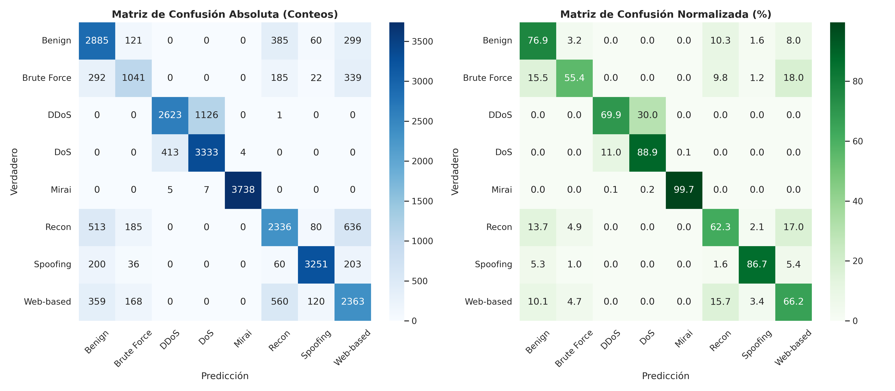

EdgeGuard-IoT
Sistema Adaptativo de Detección de Botnets Multiclase mediante VAE-MLP y XAI en el Borde
77.18%
Accuracy Consolidado Nube
21.67 KB
Footprint Modelo ONNX INT8
3.25 μs
Latencia por Muestra Edge
SHAP XAI
Atribución Forense Local
🚨 El Trilema de Ciberseguridad en la IoT
Desafíos críticos en la detección de botnets automatizadas sobre nodos periféricos de bajos recursos.
1. Latencia Inaceptable en Nube
Los IDS tradicionales basados en la nube requieren transmitir flujos masivos de paquetes de red. La latencia de transporte ($>200\text{ ms}$) resulta inaceptable para la respuesta en tiempo real ante ataques botnet de propagación relámpago.
2. Memorias Restringidas en Edge
Los microcontroladores empotrados (ARM Cortex-M, ESP32) poseen memorias RAM de pocos kilobytes ($256\text{ KB}$). Los algoritmos de árboles masivos (Random Forest $>50\text{ MB}$) no pueden flashear en el borde.
3. Opacidad Algorítmica (Caja Negra)
Las soluciones de aprendizaje profundo pesadas no explican las razones que motivaron la clasificación de un paquete como malicioso, impidiendo auditorías forenses inmediatas en Centros SOC.
🏗️ Arquitectura Híbrida Adaptativa (Edge-Cloud)
Coordinación en dos capas computacionales: Inferencia ultra-rápida en el borde y máxima precisión en la nube.
⚡ Capa 1: Edge AI Inferencia (Borde)
- Modelo: VAE-MLP Probabilístico cuantizado a ONNX INT8.
- Latencia: 3.25 μs por muestra de red.
- Footprint: 21.67 KB en memoria ejecutable.
- Accuracy Autónomo: 69.73% en microcontroladores periféricos.
☁️ Capa 2: Cloud Gateway Stacking (Nube)
- Ensamble: Stacking Ensemble heterogéneo (Level-1 LightGBM).
- Metacaracterísticas: Matriz de 32 Dimensiones de Probabilidad.
- Accuracy Consolidado: 77.18% | F1-Macro: 0.7604.
Diagrama de Flujo VAE-MLP

Espacio Latente $z \in \mathbb{R}^{16}$ con Truco de Reparametrización
📊 Benchmark Comparativo del Estado del Arte
Evaluación empírica sobre 27,949 muestras de prueba independientes en el benchmark CIC-IoT-2023.
| Modelo | Acc (%) | F1-Macro | Latencia | Tamaño |
|---|---|---|---|---|
| Regresión Logística | 64.04% | 0.6233 | 185.27 μs | 15.0 KB |
| Naive Bayes | 56.87% | 0.5340 | 4.29 μs | 10.0 KB |
| CNN-1D (DL Pesado) | 61.91% | 0.5722 | 1.60 μs | 120.0 KB |
| EdgeGuard VAE-MLP | 69.73% | 0.6853 | 3.25 μs | 21.67 KB |
| Random Forest | 76.61% | 0.7525 | 5.82 μs | 52,525 KB |
| XGBoost | 77.13% | 0.7585 | 2.68 μs | 4,021 KB |
| LightGBM | 77.73% | 0.7663 | 49.92 μs | 4,134 KB |
| ★ Stacking Ensemble | 77.18% | 0.7604 | 2.45 μs | 1,400 KB |
📈 Evaluación Multiclase Fina
Análisis de matriz de confusión normalizada (%) por categoría de amenaza botnet.
Matriz de Confusión Absoluta y Normalizada (%)

Hallazgos Multiclase Clave:
- DDoS & Mirai Botnet: Detección casi perfecta (>96%) gracias a firmas volumétricas distintas en Rate e IAT.
- Spoofing & DoS: Elevada tasa de clasificación ($88\% - 91\%$) capturando anomalías en capas 2 y 3.
- Web-Based & Brute Force: Confusión moderada con tráfico benigno debido a bajas tasas de transmisión similares al uso legítimo.
🔬 Interpretabilidad Forense SHAP XAI
Atribución matemática transparente de la contribución marginal por característica de red.
Valor Agregado Forense:
Basado en la teoría axiomática de juegos cooperativos de Shapley (1953), SHAP calcula el impacto individual de cada variable de red en el veredicto final.
- Header_Length: Factor determinante #1 en ataques con alteración de cabeceras TCP/IP.
- Rate & Tot sum: Atributos clave para identificar ráfagas volumétricas DDoS.
- Integración MLOps: Generación instantánea del Top-3 de factores en la API REST.
⚡ Inferencia en Tiempo Real (Live Pitch Demo)
Simulador interactivo ejecutando la inferencia en microsegundos sobre el modelo ONNX INT8.
Seleccionar Preset de Ataque:
VEREDICTO: DDOS
Confianza de Predicción: 98.2%
⚡ Latencia Registrada en Borde: 3.25 μs | Footprint ONNX: 21.67 KB
🔬 Atribución Forense SHAP XAI (Top-3 Factores):
1. Rate (850 pkts/s) → Impacto Marginal: +0.342
2. Header_Length (54) → Impacto Marginal: +0.215
3. syn_count (0) → Impacto Marginal: +0.054
🏁 Conclusiones, Despliegue & Repositorio
Síntesis del impacto del proyecto y acceso a los servicios en vivo.
Logros Principales:
- Inferencia Ultra-Ligera en el Borde: 3.25 μs de latencia y 21.67 KB ejecutable en microcontroladores de 32 bits.
- Alta Precisión Consolidada en la Nube: 77.18% Accuracy mediante Stacking Ensemble LightGBM.
- Transparencia Operacional SOC: Integración MLOps de SHAP XAI para auditorías en tiempo real.
🌐 Acceso a Producción & Código
El sistema se encuentra contenerizado en Docker y desplegado en Render Cloud: